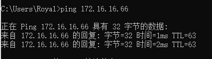
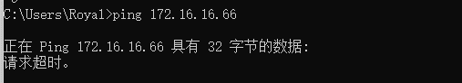
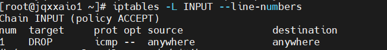

书接上回
10. 负载均衡传入的网络流量
- 使用iptables可以实现传入web流量的负载均衡，我们可以传入web流量负载均衡使用iptables防火墙规则。
- 将HTTPS流量负载平衡至三个不同的ip地址。
1
2
3iptables -A PREROUTING -i eth0 -p tcp --dport 443 -m state --state NEW -m nth --counter 0 --every 3 --packet 0 -j DNAT --to-destination 192.168.1.101:443
iptables -A PREROUTING -i eth0 -p tcp --dport 443 -m state --state NEW -m nth --counter 0 --every 3 --packet 1 -j DNAT --to-destination 192.168.1.102:443
iptables -A PREROUTING -i eth0 -p tcp --dport 443 -m state --state NEW -m nth --counter 0 --every 3 --packet 2 -j DNAT --to-destination 192.168.1.103:443
11. ping和禁ping
允许外部主机ping内部主机
1
2iptables -A INPUT -p icmp --icmp-type echo-request -j ACCEPT
iptables -A OUTPUT -p icmp --icmp-type echo-reply -j ACCEPT允许内部主机ping外部主机
1
2iptables -A INPUT -p icmp --icmp-type echo-request -j ACCEPT
iptables -A OUTPUT -p icmp --icmp-type echo-reply -j ACCEPT实际案例：在主机上禁ping
1
iptables -I INPUT -p icmp -j DROP

查看添加的链
1
iptables -L INPUT --line-numbers

恢复原状，删除添加的链的行号
1
iptables -D INPUT 1
12. 允许回环访问
- 在服务器上允许127.0.0.1回环访问。
1
2iptables -A INPUT -i lo -j ACCEPT
iptables -A OUTPUT -o lo -j ACCEPT
13. 允许内部网络域外部网络的通信
- 防火墙服务器上的其中一个网卡连接到外部，另一个网卡连接到内部服务器，使用以下规则允许内部网络与外部网络的通信。此例中，eth1连接到外部网络(互联网)，eth0连接到内部网络(例如:192.168.1.x)。
1
iptables -A FORWARD -i eth0 -o eth1 -j ACCEPT
14. 允许出站的DNS连接
1 | iptables -A OUTPUT -p udp -o eth0 --dport 53 -j ACCEPT |
15. 允许来自指定网络的MySQL连接请求
- 很多情况下，MySQL数据库与web服务跑在同一台服务器上。有时候我们仅希望DBA和开发人员从内部网络（192.168.100.0/24）直接登录数据库，可尝试以下命令：
1
2iptables -A INPUT -i eth0 -p tcp -s 192.168.100.0/24 --dport 3306 -m state --state NEW,ESTABLISHED -j ACCEPT
iptables -A OUTPUT -o eth0 -p tcp --sport 3306 -m state --state ESTABLISHED -j ACCEPT
16. 防止DoS攻击
1 | iptables -A INPUT -p tcp --dport 80 -m limit --limit 25/minute --limit-burst 100 -j ACCEPT |
端口转发
将来自422端口的流量全部转到22端口，这意味着我们既能通过422端口又能通过22端口进行ssh连接。启用DNAT转发。
1
iptables -t nat -A PREROUTING -p tcp -d 192.168.102.37 --dport 422 -j DNAT --to 192.168.102.37:22
另外
1
2iptables -A INPUT -i eth0 -p tcp --dport 422 -m state --state NEW,ESTABLISHED -j ACCEPT
iptables -A OUTPUT -o eth0 -p tcp --sport 422 -m state --state ESTABLISHED -j ACCEPT